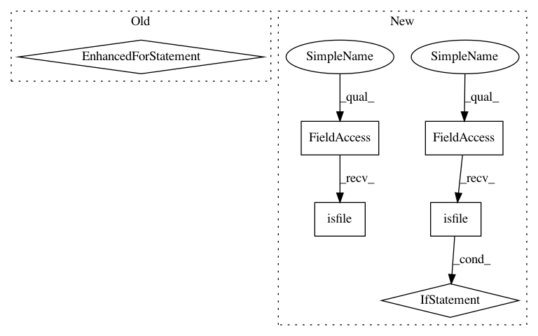

74c014b048f6e4df6780bb767702a852b1beba1c,pynets/dmri/dmri_utils.py,,make_gtab_and_bmask,#Any#Any#Any#Any#Any#Any#Any#,111
Before Change
all_b0s_aff = dwi_img.affine.copy()
dwi_data = np.asarray(dwi_img.dataobj)
dwi_img.uncache()
for b0 in b0s:
print(b0)
b0_vols.append(dwi_data[:, :, :, b0])
all_b0s_aff[3][3] = len(b0_vols)
nib.save(nib.Nifti1Image(np.stack(b0_vols, axis=3), affine=all_b0s_aff), all_b0s_file)
mean_b0_file = make_mean_b0(all_b0s_file)
After Change
// Save gradient table to pickle
save_pickle(gtab_file, gtab)
if os.path.isfile(all_b0s_file):
pass
else:
// Extract and Combine all b0s collected, make mean b0
print("Extracting b0"s...")
b0_vols = []
dwi_img = nib.load(dwi_file)
all_b0s_aff = dwi_img.affine.copy()
dwi_data = np.asarray(dwi_img.dataobj)
for b0 in b0s:
print(b0)
b0_vols.append(dwi_data[:, :, :, b0])
all_b0s_aff[3][3] = len(b0_vols)
nib.save(nib.Nifti1Image(np.stack(b0_vols, axis=3), affine=all_b0s_aff), all_b0s_file)
mean_b0_file = make_mean_b0(all_b0s_file)
dwi_img.uncache()
del dwi_data
// Create mean b0 brain mask
if os.path.isfile(B0_bet):
pass
else:
cmd = "bet " + mean_b0_file + " " + B0_bet + " -m -f 0.2"
os.system(cmd)
while not os.path.exists(B0_bet):
time.sleep(1)
return gtab_file, B0_bet, B0_mask, dwi_file
In pattern: SUPERPATTERN
Frequency: 3
Non-data size: 6
Instances
Project Name: dPys/PyNets
Commit Name: 74c014b048f6e4df6780bb767702a852b1beba1c
Time: 2020-03-05
Author: dpisner@utexas.edu
File Name: pynets/dmri/dmri_utils.py
Class Name:
Method Name: make_gtab_and_bmask
Project Name: danforthcenter/plantcv
Commit Name: 1e56357baee99a5fa02d54df0db476c58258ffbf
Time: 2017-02-03
Author: mgehan@danforthcenter.org
File Name: plantcv-pipeline.py
Class Name:
Method Name: db_connect
Project Name: danforthcenter/plantcv
Commit Name: 4bd9e98e3a538f9ef3676db3f2f3947de138e256
Time: 2017-02-20
Author: maxjfeldman@gmail.com
File Name: plantcv-pipeline.py
Class Name:
Method Name: db_connect
Project Name: dPys/PyNets
Commit Name: 74c014b048f6e4df6780bb767702a852b1beba1c
Time: 2020-03-05
Author: dpisner@utexas.edu
File Name: pynets/dmri/dmri_utils.py
Class Name:
Method Name: make_gtab_and_bmask